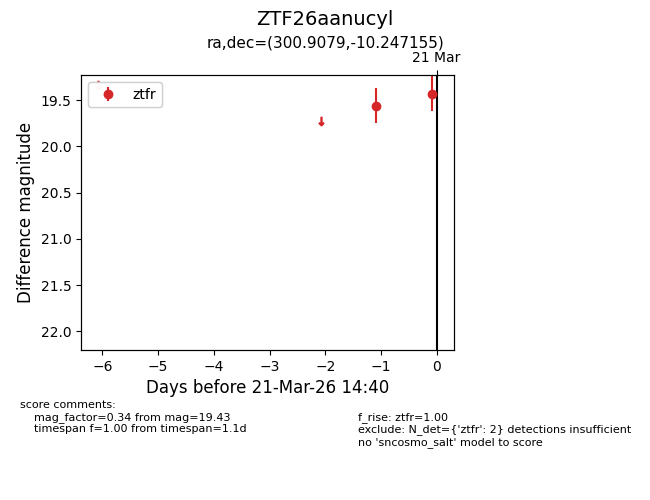
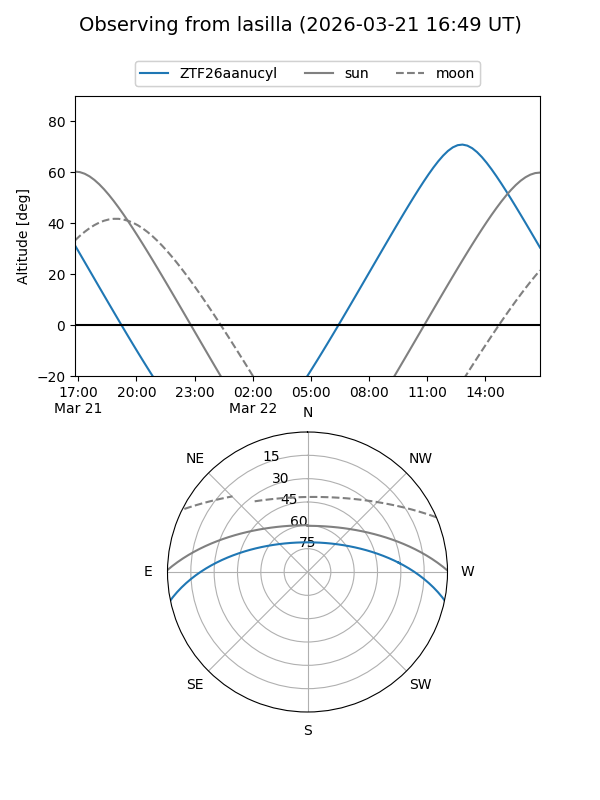
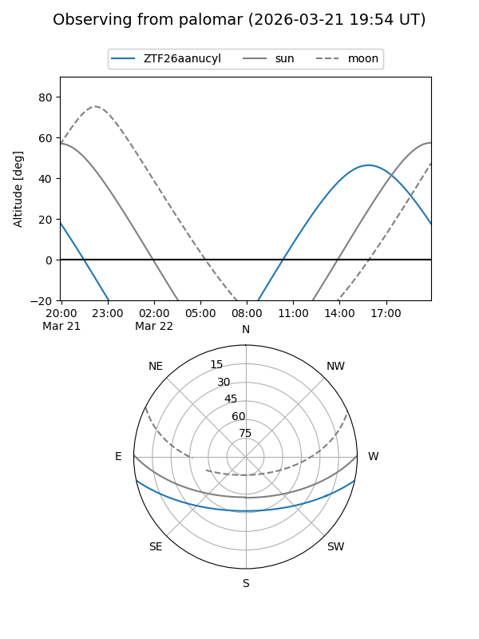

ZTF26aanucyl
Target ZTF26aanucyl at 2026-03-21 14:42
Aliases and brokers:
FINK: link
Lasair: link
ALeRCE: link
alt names
ZTF26aanucyl (ztf,fink_ztf)
Coordinates:
equatorial (ra, dec) = 300.9079,-10.24715
equatorial (HMS+DMS) = 20:03:37.89,-10:14:49.76
galactic (l, b) = (31.7499,-20.63756)
Flags:
Photometry:
last ztfr=19.43
2 ztfr detections
Lightcurve

Visibility


Additional plots